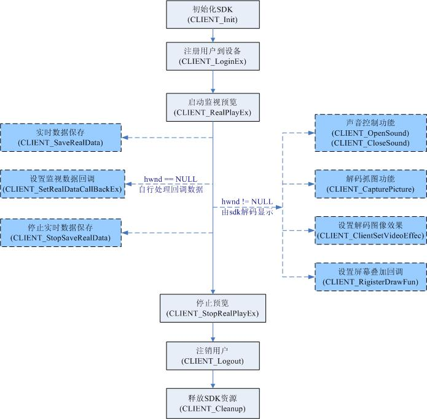

请参阅: 说明

DahuaNetSDKLibrary.CLIENT_RealPlayEx(com.sun.jna.NativeLong, int, com.sun.jna.Pointer, int)中的播放窗口句柄为有效句柄，
则由SDK实现解码功能。DahuaNetSDKLibrary.CLIENT_RealPlayEx(com.sun.jna.NativeLong, int, com.sun.jna.Pointer, int)中的播放窗口句柄为NULL，
并通过调用设置实时监视数据回调接口（DahuaNetSDKLibrary.CLIENT_SetRealDataCallBackEx(com.sun.jna.NativeLong, com.dahua.netsdk.linux.DahuaNetSDKLibrary.RealDataCallBackEx, com.sun.jna.NativeLong, int)），
获取码流数据进行后续解码播放处理。